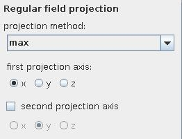

SIMPLE PROJECTION
The simple projection module carries out a regular field projection parallel to one of the coordinate axes.
Input data
The input field is regular 2D or 3D with affine geometry.
Output data
The output field is regular with affine geometry.
Computation parameters

The projection method drop down list chooses between several projection methods: max, min, mean, normalized mean.
The first projection axis radio button menu allows to choose the projection axis. It diminishes the field dimension by one.
If input field is 3D the second projection axis check box can be switched on since a second projection of the first projection results is possible. It diminishes the field dimension by one, the output field is then 1D.